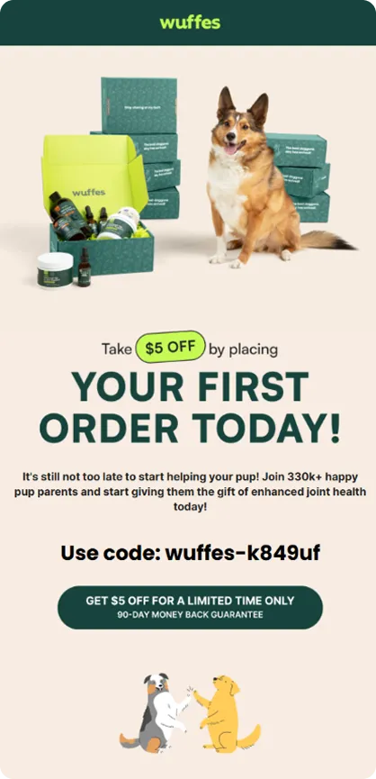
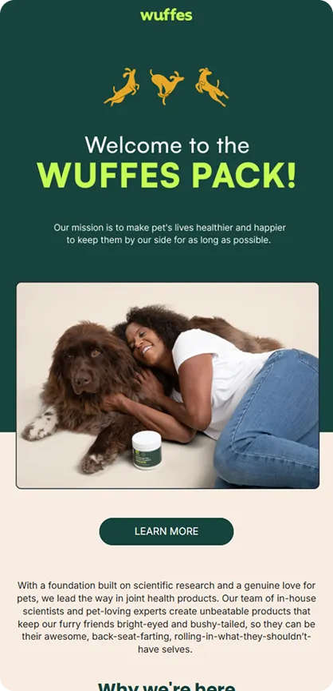
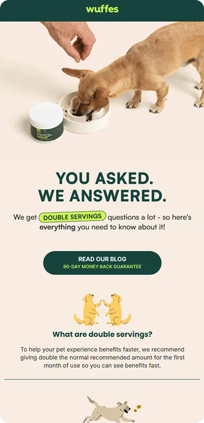
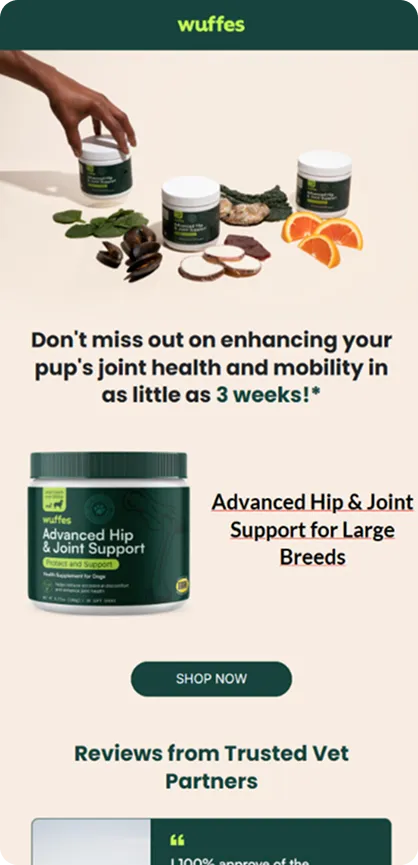

At the Single Slice event in San Francisco, organized by Really Good Emails and co-hosted for this edition by Beefree and Customer.io, we brought a special live version of Feedback Friday, the format many know from our YouTube channel.
This time, the session was led not by Matt Helbig but by Logan Sandrock Baird (RGE/Beefree) and Naomi West (Parcel by Customer.io), joined by a room full of email geeks ready to share ideas and give live feedback. The featured brand was Wuffes, which makes supplements for dogs with a special focus on joint health. Together, we reviewed four lifecycle emails, highlighting both what worked well and areas where there was room for optimization.
👇 Keep reading for all the juicy insights from the night.
(See the full email)
Email 1 — Welcome + $5 off
The first touchpoint opens with a $5 discount hero. It’s an immediate, clear incentive, but the accompanying line—“it’s still not too late to start helping your pup”—sets a surprisingly dark and anxious tone for what should be a welcoming introduction.
The product grid is one of the strongest sections: products are paired with concise descriptions, bullet points, and specific CTAs, such as “shop joint chews.” This makes it easy for new subscribers to explore the range.
However, issues undermine trust and accessibility:
- Inconsistent proof numbers (“330,000 happy pup parents” in one section vs. “770,000” later).
- Centered paragraphs that reduce readability and pose challenges for readers with dyslexia.
- In fact, one audience member noted how some restaurants intentionally center-align menus to make it harder to compare prices—a reminder that centered text = more cognitive friction.
- Subscription copy that highlights “58¢ a day” instead of a clearer percentage discount.
- A confusing “X” icon that suggests a modal close but isn’t functional.
Despite these hiccups, the offer and product layout are conversion-friendly. What’s missing is tone alignment, text clarity, and a consistent proof framework.
Summary: Strong discount and product grid, but Wuffes could improve by adopting a friendlier tone, left-aligning copy for accessibility, clarifying subscription savings, and keeping proof numbers consistent.
(See the full email)
Email 2 — “Welcome to the Pack”
This follow-up email leads with playful illustrations and a mission-driven headline. The intent is warm, but the “Learn more” CTA feels vague and poorly connected to the hero copy.
The founder story is a bright spot: Two succinct bullet points paired with a dog photo make it authentic and relatable, a rare example of founder content done well.
But from there, the email loses focus:
- Repetition of differentiators already introduced in the first touch.
- Inconsistent copy like “vet recommended” vs. “vet approved.”
- All-caps CTAs that feel visually loud and unfriendly to screen readers.
- Subscription confusion between subscribing to emails and subscribing to products.
Visuals (e.g., dogs interacting with the product) are strong, but the structure and language require streamlining. Another missed opportunity: the site CTA color is a strong tennis-ball green, but the button color in emails is inconsistent. Using it more would improve the hierarchy, but it should be tested in dark mode, as neon hues can lose contrast or vibrate on dark backgrounds.
Summary: The founder story works well, but this email could be strengthened with specific CTAs, reduced repetition, clearer distinctions between email and product subscriptions, and consistent button usage (tested across both dark/light modes).

Email 3 — Double servings
This educational piece tackles the concept of “double servings.” The subject line asks the right question—“Are double servings needed for your pup?”—but the hero leads with “You asked. We answered.” The result: the actual question appears further down, diluting clarity.
Other friction points:
- Charts are image-only, scale poorly on mobile devices, and are inaccessible to screen readers.
- A blog CTA appears too early, sending readers out of the email before the main explanation is delivered.
- The most persuasive block—pricing/value reassurance—has no CTA underneath it.
- The hero image (a slim dog with an empty bowl) visually contradicts the “double servings” message.
There are wins too: the color-blocking works well to break up sections and guide attention. But the overall flow could be re-ordered to surface the main question first, keep readers in the email, and tie value to conversion moments.
Summary: This is a good educational approach, but Wuffes could strengthen this email by surfacing the key question upfront, making the data text-based, and placing CTAs under the strongest value blocks.

Email 4 — Abandoned cart
This abandoned cart email opens with a long, hedged headline about results “in as little as 3 weeks”—complete with an asterisk. Instead of inspiring confidence, it raises doubt. Later, urgency is conveyed in the phrase “claim your offer before it’s too late”—but with no prior setup, it comes across as alarmist.
The product block is visually well-designed, but it lacks essential elements: there is no pricing information, no comparison between one-time and subscription options, and no reinforcement of the $5 discount.
The email has standout elements that should be highlighted:
- Social proof from a vet (“incredible results with my patients and my own pet”) is buried mid-email.
- A delightful team-dog favorites section humanizes the brand and builds trust, but comes late instead of leading.
Meanwhile, consistency issues persist:
- Numbers fluctuate again (330k, 770k, 400k).
- Styles shift (all caps, countdowns, inconsistent guarantees).
- Microcopy like “90 day” vs. “90-day” isn’t standardized.
It feels like too many contributors touched the template without a final QA pass, leaving it disjointed. Other live observations worth noting:
- The GIF of a dog climbing stairs loaded slowly on café Wi-Fi, which accidentally made the urgency CTA feel more like a real countdown. At normal speed, the connection between GIF and urgency felt weaker.
- One suggestion from the room was to swap out alarmist urgency with a softer, curiosity-driven CTA, such as “Check remaining inventory”—a gentler way to leverage scarcity.
- The CTA colors again didn’t align with the green site buttons; consistency here would enhance the hierarchy.
Summary: This abandoned cart has strong assets, but Wuffes could boost conversion by moving social proof higher, showing clear pricing comparisons, applying urgency more credibly (or reframing it as “check inventory availability”), and ensuring consistent style and language.
Key takeaways
- Lead with empathy, not alarm. Frame urgency only when a real deadline exists.
- Make scanning effortless. Left-align text, use bullets wisely, and keep CTAs live-text and specific.
- Stay consistent. Align proof numbers, claims, and microcopy across all templates.
- Show clear pricing. Compare one-time vs. subscription in key conversion moments.
- Humanize and segment. Use authentic testimonials and tailor content for vets vs. pet parents.
- Test simplicity and design. Shorter copy, one strong CTA, and consistent brand colors (QA’d in dark mode) often win.
Wrapping up
This Feedback Friday Live at Single Slice once again showed why our community matters. When email geeks come together, we don’t just spot what’s broken; we share ideas to make emails stronger, clearer, and more human.
Thanks to everyone who joined us in San Francisco and to Beefree and Customer.io for co-hosting this edition. If you couldn’t make it, we hope these highlights give you plenty of inspiration to take back to your own email practice.
👀 Stay tuned for the next Single Slice or Feedback Friday episode and keep the conversation going in the RGE community.